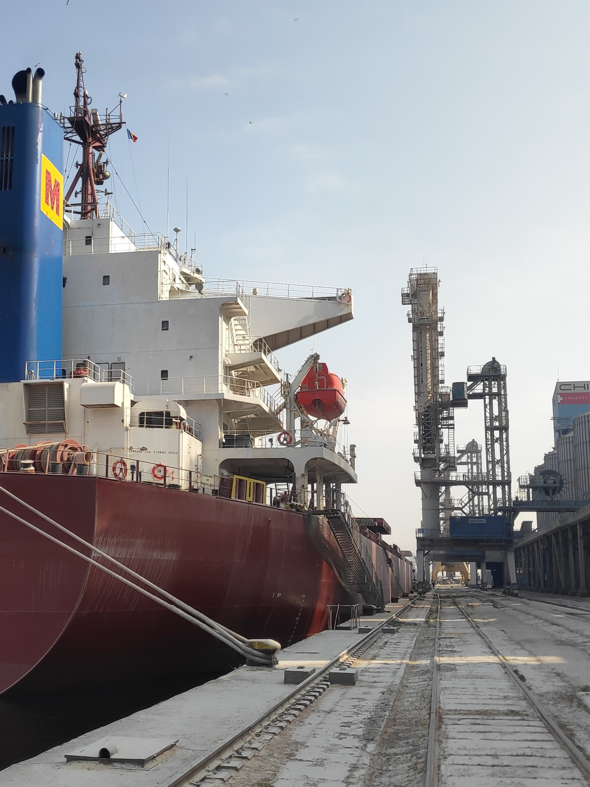
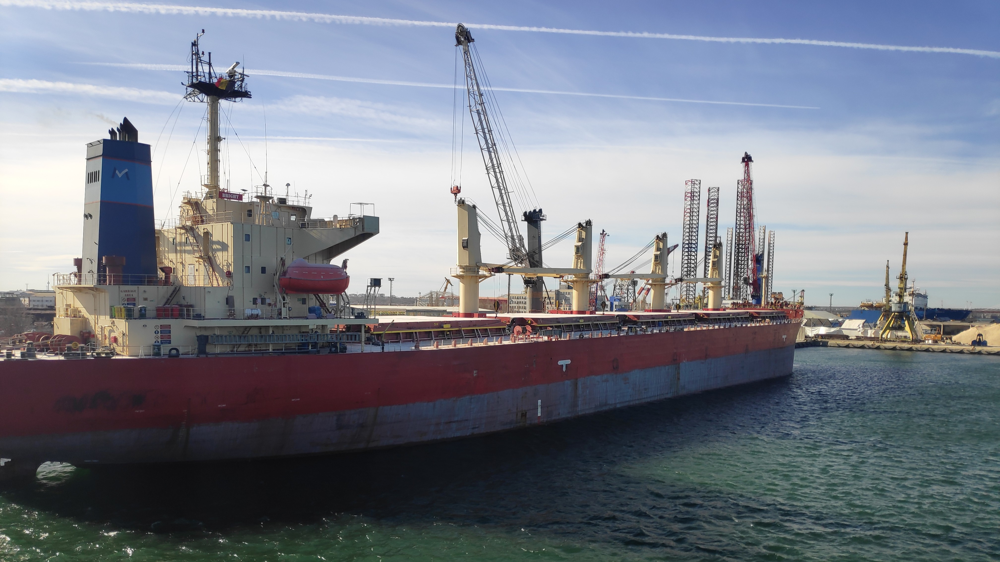

Surveyor in Constanta
Marine & Cargo Surveyor in Constanta Port, Romania

Contact Surveyor
Survey Services
Providing marine and cargo survey services in Constanta Port, including draught surveys, sealing of hatch covers, bunker surveys, condition surveys and cargo inspections.
The list of available survey services in Constanta Port:
- Draught Survey
- Bunker Survey
- Sealing of Hatch Covers
- On-Hire Condition Survey
- Vegetable Oils discharge supervision, including sunflower seed oil, in accordance with FOSFA rules
- Tanks unsealing
- Sampling
- Discharge supervision
- Vessel tanks ullaging
- Shore tanks measurements
- Weight control through shore scales
- Empty tanks inspection
- Reporting
- Grain Cargoes loading supervision, including grains, oilseeds, oilseed meals, in accordance with GAFTA and FOSFA rules
- Holds inspection
- Draught survey
- Loading supervision
- Sampling
- Weight control through shore scales
- Holds sealing
- Reporting
- Steel Products, pre-shipment inspections and tally count
- Cargo Holds Inspections
- Cargo Tanks Inspections
- Hatch Covers Inspections
- Stock Inspections
- Pre-purchase Condition Surveys
- Perishable Cargo Inspections
- Container Inspections
- Damage Surveys, Collecting Evidences, P&I Investigations
Services are available in Constanta Port and nearby areas.
